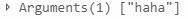
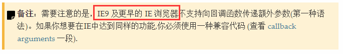

在廖雪峰大神的官方网站看nodejs的时候，发现自己对Promise函数不甚了解，于是转去看Promise函数，看到了这段代码：
function multiply(input) {
return new Promise(function (resolve, reject) {
log('calculating ' + input + ' x ' + input + '...');
setTimeout(resolve, 500, input * input);
});
}setTimeout居然有第三个参数！！！
还有这种操作？我怎么不知道？我怕不是个假的前端。
马上查了MDN，发现确实有第三个参数，而且不仅三个，第三个之后的参数都将作为settimeout函数的参数使用。
简单测试了一下：
setTimeout(function(){
console.log(arguments)
},2000,"haha");确实输出了"haha":

同上试了一下setInterval，也可以通过第三个参数传参。
不过这种用法有其局限性，我指的当然是该死的IE，以下是MDN的备注：

没想到温故真的能知新，我之前都是在匿名函数内再写个函数来传参的，真蠢。
另外,MDN上有针对IE的兼容代码，这里不再抄录。
https://developer.mozilla.org/zh-CN/docs/Web/API/Window/setTimeout